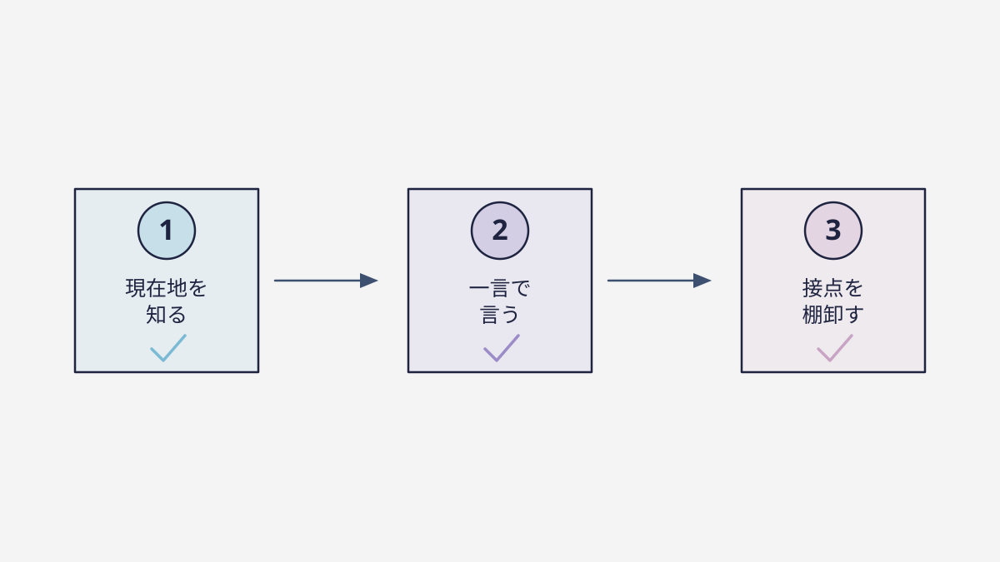

— 01 —「いつやるか」は、事業の段階で決まる
ブランディングに“一律の正解”はありません。0から立ち上げる時期なら、完璧なブランドより「言い切った一行」と、市場の反応で更新できる軽さが要る。ある程度知られてきた成長期なら、積み上げた認知を“資産”として一貫させることが要る。すでにブランドがある刷新期なら、変える前に「何を残すか」を見極めることが要ります。
ここでよくある失敗が、段階に合わない打ち手を選ぶこと。立ち上げたばかりなのに分厚いブランドブックを作り込んで動けなくなったり、逆に、組織が大きくなったのに創業時のノリのまま各自バラバラに発信し続けたり。どちらも、力の入れどころを間違えた例です。
早すぎる作り込みも、遅すぎる放置も、どちらも損。今の段階に合った打ち手を選ぶことが、遠回りに見えていちばんの近道になります。だからまず、自分の事業が今どの段階にいるのかを、正直に見つめることから始まります。
もし今、自分の段階がよく分からなくても大丈夫です。それ自体が「まず現在地を確かめよう」というサインだからです。段階が分かれば打ち手が決まり、打ち手が決まれば迷いは消える。順番に進めば、どんな会社でも必ず次の一歩が見つかります。
— 02 —どの段階でも、最初の一歩は同じ
段階は違っても、スタートは共通です。それは「自社の現在地を測る」こと。今どの柱が強く、どこが弱いのかを知らずに動くと、要らないところに時間とお金を使ってしまいます。
地図アプリを思い出してください。目的地を入れる前に、まず“現在地”を表示しますよね。現在地が分からなければ、同じ目的地でも進む方向は真逆になりうる。ブランディングもまったく同じで、今どこにいるかが分かって初めて、次の一歩をどちらへ踏み出すべきかが決まります。
「何から始めればいい？」という問いの答えは、実は「まず、今の場所を確かめること」。壮大な戦略や大きな予算は、その後でいい。順番さえ守れば、小さな会社でも、知識がなくても、確実に前へ進めます。
— 03 —だから、まずはチェックから
難しい知識は要りません。5つの問いに答えるだけで、自社のブランドが今どんな状態かが見えます。所要はおよそ2分。答えに正解も不正解もなく、今の実感で選ぶだけ。そこで見えた“最も弱い柱”こそ、あなたが明日から手をつけるべき場所です。
チェックの結果は、「うちは知られてはいるが、選ばれ続ける理由が弱いんだな」といった具体的な気づきをくれます。漠然とした不安が、手をつけられる“課題”に変わる。ここまで来れば、もう迷子ではありません。
ブランディングは、才能でもセンスでもなく、順番の問題です。測る → 弱点を知る → そこから直す。この順番を踏むだけで、誰でも前に進めます。まずは現在地を、ブランドチェックで確かめてみてください。

— 04 —よくある不安に、先に答えます
「うちみたいな小さな会社でも意味ある？」——むしろ、体力の少ない会社ほど効きます。一人の良い口コミが次を連れてくるからです。「センスがないと無理では？」——大丈夫。ブランディングは才能ではなく順番の問題で、順番はこの記事たちがすべて説明しています。
残る一歩は、たった一つ。自分の現在地を知ることです。5つの問いに答えるブランドチェックなら、約2分で終わります。そこで見えた弱点が、あなたが明日から手をつける、いちばん効く場所になります。